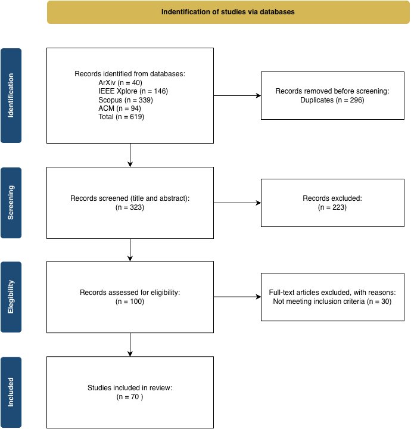

Paper Overview
A Systematic Review and Unified Framework for Technical Evolution, Bias Diagnosis, and Regulatory Alignment
Abstract
This paper addresses the gap between MAIM proliferation and standardized evaluation through three contributions: (1) a unified conceptual pipeline deconstructing MAIMs into modular components revealing distinct bias profiles; (2) a PRISMA 2020-compliant systematic review of 70 method papers; and (3) an ISO/IEC TS 6254:2025-aligned evaluation methodology with artifact-conditioned metric selection and falsifiability testing. A complementary analysis of 44 application studies documents a persistent gap between causal MAIM availability and near-absent adoption in practice.
Three Contributions
① Unified Pipeline
Deconstructs MAIMs into Context (κ), Sampling, Surrogate (G), Regularization (Ω). Marginal/conditional/interventional semantics → distinct bias profiles.
② PRISMA 2020 SLR
n=70 method papers across 8 RQs + 44 application studies in Cybersecurity, Healthcare, Finance, Industrial Systems.
③ ISO-Aligned Methodology
Phase I (Selection), Phase II (Artifact-conditioned evaluation), Phase III (Falsifiability testing) aligned with ISO/IEC TS 6254:2025.
Research Questions
MAIMs Framework
Formal definition, conceptual pipeline, foundational methods, and classified variants
Black-Box Model
The predictive system is a black-box model: f_b: X → Y. Parameters, architecture, and training are unknown. Only oracle access to f_b(x) for chosen inputs. Task-agnostic (classification, regression, clustering). Fixed post-training.
MAIM Definition
A Model-Agnostic Interpretability Method uses only input–output queries and optional auxiliary context, returning an interpretable artifact:
M_agn : F × K → E
F = black-box predictors · K = auxiliary context (local x, global S/D, side info) · E = explanation artifacts. Context κ embeds statistical and causal assumptions governing how the model is probed.
Conceptual Pipeline
Bias Profiles by Context κ
κ_marginal
Assumes feature independence → Observation bias. Off-manifold sampling tests black-box on unlikely feature combinations.
κ_conditional
Honors observed distribution → Confounding bias. May attribute importance to spuriously correlated features.
κ_interventional (do)
Causal interventions → Causal isolation. Reduces both biases but requires causal graph or identification strategies.
Explanation Output Artifacts
| Type | Formal Object | Scope | Description |
|---|---|---|---|
| Attribution | v(x;κ) ∈ ℝᵖ | L/G | Real-valued scores to features (importance, contribution, sensitivity) |
| Effect Summary | {(x_S, y_k)} | L/G | Input–output pairs: curves/surfaces/profiles as features vary |
| Rule-based | (r, ŷ) | L/G | Human-readable predicate + summary approximating f_b on region |
| Counterfactual | δ* ∈ Δ | L/G | Minimal admissible change shifting output toward target |
Foundational Methods & Variants
| Scope | Base | Variant | Contribution |
|---|---|---|---|
| Global | PDP | cs-PDP | On-manifold sampling |
| StratPD | On-manifold integration | ||
| iPDP | Streaming/Online | ||
| CDPs | Causal interventions | ||
| Global | ALE | ALER/D | Summary metrics |
| DALE | Efficiency (Diff. ALE) | ||
| RHALE | Heterogeneity aware | ||
| Global | MR | Sobol-CPI | Sobol estimand |
| cARFi | Lightweight resampling | ||
| Global | Shapley | SAGE | Global loss-based Shapley |
| CAGE | Causal global Shapley | ||
| Local | LIME | LIMEtree | Multiclass coherence |
| Anchors | Applicability region (Rules) | ||
| GLIME | Weight-free sampling | ||
| MeLIME | Support-aware sampling | ||
| CALIME | Causal neighborhood | ||
| BayLIME | Uncertainty quantification | ||
| G-LIME | Global prior regularization | ||
| Local | SHAP | Marginal SHAP | Marginalization |
| Conditional SHAP | Dependence-preserving | ||
| CSV (Causal) | Interventional (do) | ||
| ASV | Causal ordered weighting | ||
| Local | CF | LORE / LORE_sa | Rule paths & Stability |
| CERTIFAI / MOC | Genetic diversity / Pareto | ||
| MINT | Causal recourse (SCM) | ||
| Local | ICE | c-ICE / d-ICE | Centered / Derivative plots |
Systematic Literature Review
PRISMA 2020-compliant workflow — search, eligibility, screening, and results
Search Strategy
AND (method* OR "technique" OR "framework")
AND ("post-hoc" OR "post hoc")
AND ("machine learning" OR "deep learning")
AND (interpret* OR explain* OR "XAI")
Inclusion Criteria
| Criterion | Rationale | |
|---|---|---|
| ✓ | Published 2020–2025-02 | Recent developments |
| ✓ | Proposes/extends model-agnostic post-hoc method | Review scope alignment |
| ✓ | Sufficient methodological detail | Consistent extraction |
| ✓ | Archival or preprint with evaluation | Rigor + coverage |
| ✓ | Full text accessible · English | Complete extraction |
Exclusion Criteria
| Criterion | Rationale | |
|---|---|---|
| ✗ | Before 2020 | Contemporary focus |
| ✗ | Model-specific or intrinsic only | Agnostic focus |
| ✗ | Application-only without new component | Methodological only |
| ✗ | Duplicates / superseded versions | No double-counting |
| ✗ | Full text unavailable | Reliable interpretation |
PRISMA 2020 Flow

Original PRISMA 2020 flow diagram
Key SLR Results
Scope (RQ2)
Local: 53/70 · Global: 11 · Both: 6
Outputs (RQ3)
Attribution: 43 · CF: 17 · Rules: 14 · Effect: 4 · Other: 19
Data (RQ4)
Tabular: 48 · TS/Image: 12 each · Text: 9 · Graph: 2 · Audio: 1
Evaluation (RQ5)
Fidelity top metric: 14/70. Qualitative: 57.1%. Visual inspection dominates.
Human (RQ6)
Only 7/70 (10%) report human feedback. Attribution: 9.3%.
Limitations (RQ8)
Cost: 50 · Hyperparams: 41 · Data: 40 · Robustness: 35
Records Browser
Evaluation & ISO Methodology
ISO/IEC TS 6254:2025-aligned methodology for MAIM selection and evaluation
1.1 Inception & Objective Elicitation
Audience (A)
AI Specialists → attribution vectors. Domain experts → rules/counterfactuals. Laypersons → intuitive summaries.
Frame Activity (F)
Development · Familiarization · Decision validation · A posteriori analysis
1.2 Property Mapping (ISO 8.2)
Scope (S)
Global (system-level) or Local (instance-level)
Depth & Completeness
Static factors → directed contributions → causal chains. Sparsity: near-complete → top-k.
Reasoning Path (R)
System-faithful (approximate f_b) vs. Human-aligned (domain-coherent concepts)
1.3 Technical Constraints (ISO 8.3, 8.5)
Genericity (G, T) — black-box only. Display (Dy) — numeric/visual, structured, example-based, textual.
Artifact-Conditioned Evaluation Branches
| Branch | Artifact | Core Metrics | ISO |
|---|---|---|---|
| A | Attribution Φ(x) | Faithfulness Corr. · Infidelity/AOPC · Lipschitz · Seed Var. · Sparsity | 7.4.2.3–7 |
| B | Effect Summary | Monotonicity · Approx Error · ICE Variance · Dim ≤ 2 | 7.4.2.3–4 |
| C | Rule-based | Precision · Coverage · Rule Length | 7.4.2.3,5 |
| D | Counterfactual | Validity Ratio · Mahalanobis · Feasibility Ω | 7.4.2.3,8 |
| E | Others | Expert Review · IoU/Likert · Trust | 8.2.2 |
Falsifiability Tests
Label Randomization
Retrain on permuted labels. If MAIM generates similar explanations → fails (insensitive to learned parameters).
Ablation vs. Random
AOPC from masking top features must statistically outperform random ablation.
Transversal Reporting (ISO 7.2)
Document: toolkit & version · hyperparameters · computational latency · intended scope · target audience (ISO 8.2.4).
Domain Applications
44 application-focused studies across four macro-domains
Key insight: MAIMs are model-agnostic but rarely representation-agnostic. SHAP and LIME are near-universal defaults; causal variants remain virtually absent in practice.
11 papers (2022–2024). SHAP: 10/10, LIME: 8/10. TreeSHAP dominates (O(TLD²) polynomial-time exact computation).
| Ref | Domain | MAIMs | Outcome |
|---|---|---|---|
| Roy 2022 | Software defect | LIME, SHAP | Comparable (sign-agreed) |
| Gezici 2022 | Defect prediction | ELI5, LIME, SHAP | SHAP (general) |
| Kalakoti 2024 | Botnet IoT | LIME, SHAP | SHAP |
| Ahakonye 2024 | IIoT intrusion | LIME, SHAP | LIME(local)/SHAP(global) |
| Yang 2023 | Encrypted traffic | SHAP, LIME, MSS | SHAP (stability) |
Regulatory imperative in credit-risk. CIU outperforms in stability-critical HR contexts.
| Ref | Domain | MAIMs | Outcome |
|---|---|---|---|
| Gawantka 2022 | HR / Decision | LIME, SHAP, CIU | CIU (stability) |
| Tyagi 2022 | Credit scoring | LIME, SHAP | SHAP |
| Yada 2023 | Dark patterns | LIME, SHAP | LIME(local)/SHAP(global) |
| Xie 2022 | Public safety | SHAP | SHAP |
Top domain (24/70). SHAP frequently superior. CIU outperforms for capsule endoscopy (user satisfaction). Clinical data constraints: correlated, missing-not-at-random.
| Ref | Domain | MAIMs | Outcome |
|---|---|---|---|
| Naylor 2021 | In-hospital mortality | LIME, SHAP | SHAP (fidelity) |
| Singh 2022 | Cardiac arrhythmia | SHAP, LIME | SHAP (speed) |
| Balve 2024 | Breast cancer | LIME, SHAP | SHAP (robustness) |
| Hakkoum 2024 | Medical classif. | 7 methods | SHAP + CI |
| Knapič 2021 | Red lesion | LIME, SHAP, CIU | CIU (user satisfaction) |
| Gómez 2022 | Embryo stages | RISE | Single method |
SHAP favored for consistency. D-RISE supersedes gradient-based in autonomous driving.
| Ref | Domain | MAIMs | Outcome |
|---|---|---|---|
| Kricheff 2024 | Satellite anomaly | SHAP, LIME | SHAP (fidelity) |
| Ndao 2024 | Aircraft turbines | LIME, SHAP, L2X | SHAP (Acumen) |
| Thisovithan 2023 | Structural eng. | SHAP, LIME, PDP | SHAP (consistency) |
| Wen 2022 | Accident freq. | LSA,LIME,PDP,GSA,SHAP | SHAP (visual clarity) |
| Nogueira 2024 | Autonomous driving | D-RISE | Not reported |
Regulatory Landscape
Global convergence toward mandatory algorithmic transparency
Gap: Only 6/70 method papers explicitly engage with compliance, despite rapidly converging global regulation.
European Union
GDPR (2016)
Articles 13, 14, 22: meaningful information about automated decision logic — basis for "right to explanation."
EU AI Act
Risk-stratified governance. Transparency + human oversight on high-risk systems, critically depending on MAIMs.
Standards & Frameworks
ISO/IEC TS 6254:2025
Explainability objectives and evaluation with respect to intended stakeholders. Basis for our evaluation methodology.
NIST AI RMF
Govern, Map, Measure, Manage. Explainability as crucial for system reliability assessment.
Americas & Global
US: NYC Local Law 144 (automated employment tools, bias audits). Algorithmic Accountability Act. Chile: 2021 National AI Policy. Brazil: Bill 2338/2023 (right to algorithmic explanation). Argentina: Resolution 4/2023 (Reliable AI). Andorra: AI Ethics Code mandating transparency.
Normative Themes in SLR
Final Corpus (n=70)
Live from Google Sheets — changes reflected on reload
Extracted variables from the 70 included studies. For the live/downloadable version, access the Google Sheet ↗